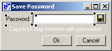

Win32::GUI::Loft Programmer's Reference -- how to incorporate The GUI Loft windows into your Perl programs (not utterly complete :)
Win32::GUI::Loft is the Runtime part of The GUI Loft.
The most important class is Win32::GUI::Loft::Design, which is used to build the designed windows at runtime. A few important methods are discussed below.
use strict;
use Win32::GUI;
use Win32;
use Win32::GUI::Loft::Design;
my $fileWindow = "fetch.gld"; #You created this using The GUI Loft
my $objDesign = Win32::GUI::Loft::Design->newLoad($fileWindow) or
die("Could not open window file ($fileWindow)");
my $win = $objDesign->buildWindow() or die("Could not build window ($fileWindow)");
$win->Show();
Win32::GUI::Dialog();
This line
my $objDesign = Win32::GUI::Loft::Design->newLoad($fileWindow) or
die("Could not open window file ($fileWindow)");
loads the Window from file. You can load the file yourself and build the window like this:
my $fhIn;
open($fhIn, "<$fileWindow") or die("Could not open file ($fileWindow)\n");
binmode($fhIn); #Note! It's a storable image
local $/;
my $code = <$fhIn>;
close($fhIn) or die();
my $objDesign = Win32::GUI::Loft::Design->newScalar($code) or
die("Could not build window file ($fileWindow)\n");
This may be used if you e.g. get the window definition (the
contents of the $code variable in this example) from
something other than a file; e.g. a database or a file
handle. Remember to use binmode() if you read the file
yourself.
#The Name property of the loaded window is "winFetch"
sub ::winFetch_Terminate {
return(-1);
}
#The -name of the button is "btnFetch"
sub ::btnFetch_Click {
#The Name property of the loaded window is "winFetch"
defined(my $win = $Win32::GUI::Loft::window{winFetch}) or return(1);
#There is another control (a Textfield) in the Design called "tfURL"
my $url = $win->tfURL->Text();
return(1);
}
Install the PPM packages found in the ``PPM'' directory. Run install.bat.
The Runtime module is used in your programs to create the windows. You'll need to install the Runtime before you try the Demo programs.
Note: You will need to run install.bat each time you download a new release! install.bat will remove, then reinstall the new modules.
Also, make sure the following modules are present:
Win32
Win32::GUI
There is a binary and a source distribution.
The binary is totally freestanding. Just run the program, and it should work.
The source relies on the Runtime, so install the PPMs first. The source is also dependent on the modules found in the Modules dir. Install them, then run the Perl file ``lib/tgl.pl''
The Demo programs are located in the Demo directory. After you have installed the Runtime PPMs, just run the Perl scripts to see them in action.
The code is commented to point out interesting and important things, so a code walkabout could be educational.
A simple demo of the Win32::GUI::Loft::Design class.
To demonstrate the timer, I chose to implement one very good user interface detail in some versions of the e-mail program Eudora; when Caps-lock is active, Eudora will warn the user that the password probably will get screwed up. The demo warns regardless of the Caps-lock state.
Things to learn from:
Enter a URL and Fetch will do a GET and display the HTTP headers and the raw HTML.
This is a great example of a quick GUI wrapper around a simple Perl program. A colleague asked if I knew how to see the HTTP response of a GET request.
-``Sure, that's a few lines of Perl''
Whining. -``Isn't there a Windows program to do that already?''
Well, fifteen minutes later, there was. And I spent most of that time trying to find the HTTP::Response method returning the HTTP headers (headers_as_string).
Things to learn from:
Text()
Simple program to display files in a RichEdit control.
Things to learn from:
For real world examples, look in the Loft\resource directory. Here you can find the windows and dialogs used in The GUI Loft.
If you decide to experiment or change anyhing, it might be a sligthly clever idea to make a backup copy first. But you already knew that... ;)
Until this section gets a little more complete, the best way to learn is to check out the code in the Demo programs.
It's not overly complicated, and the demos are nicely commented.
The Name property, and how to change it
Adding a menu to your window is really simple.
Create the menu the usual way, create the Design object, then set the mnuMenu property before you actually build the window. An example from the FileDisplay demo program:
my $fileWindow = "filedisplay.gld";
my $objDesign = Win32::GUI::Loft::Design->newLoad($fileWindow);
$objDesign->mnuMenu( Win32::GUI::MakeMenu(
"&File" => "mnuFile",
" > E&xit" => "mnuFileExit",
) );
my $win = $objDesign->buildWindow();
[Note: This example doesn't contain error checking. The demo program does.]
This section contains advice on how to do Win32::GUI coding with the windows you designed in The GUI Loft.
There is a method rhClusterWingc() on your Design objects
you can use to access the clusters and their controls.
$deisgn->rhClusterWingc() is a hash ref with (key = Cluster
name, value = array ref (with Win32::GUI controls)).
#Let's say your created window is called winTest
defined(my $win = $Win32::GUI::Loft::window{winTest}) or return(1);
my $design = $Win32::GUI::Loft::design{winTest};
#Here are the clusters
print join(", ", keys %{$design->rhClusterWingc()}) . "\n\n";
#Display all clustered controls
print Dumper($design->rhClusterWingc());
Each control can be altered at build time using a subclassed Win32::GUI::Loft::ControlInspector object. You can - addstyle, -remstyle, etc. and basically change the entire list of options passed to the method creating the control.
The Demo program FetchURL is an example of this, changing the background color of the window (to an ugly color... sorry), and adding a style to the window, making it a ToolWindow.
Study the method ``buildOptions'' in the FetchInspector.pm file for hints on how to do this.
Note that you might have to remove existing options before adding your own.
Some extracts from the Demo program:
### Creating the Win32::GUI::Window object,
### we use a ControlInspector object
my $objInspector = FetchInspector->new() or die("Could not create Inspector}n");
my $win = $objDesign->buildWindow(undef, $objInspector)
or die("Could not build window ($fileWindow)");
...
### Subclass the Win32::GUI::Loft::ControlInspector class
package FetchInspector;
use base qw( Win32::GUI::Loft::ControlInspector );
### Override tbe buildoptions method
sub buildOptions { my $self = shift; my $pkg = ref($self);
my ($objControl, $raOption) = @_;
#Modify the main window
if($objControl->prop("Name") eq "winFetch") {
#Create a class with a certain bg color
my $clsFetch = Win32::GUI::Class->new(
-name => "classFetchMisc",
-color => 2,
) or die("Could not create Class\n");
push(@$raOption, "-class" => $clsFetch);
#Add an extended style (to make it a toolwindow)
#
#(Note that you can do this from within The GUI Loft Editor,
#this is just to illustrate how to do this kind of thing)
push(@$raOption, "-addexstyle" => 0x00000080); #WS_EX_TOOLWINDOW
}
return(@$raOption);
}
When you create applications using Win32::GUI::Loft, you need to supply the modules somehow along with the Perl program.
Include the PPM files in your distribution script, or point to The GUI Loft web site.
The GUI Loft binary is a PerlApp application, and so any program you write using Win32::GUI::Loft should work equally well in that regard.
This is actually a really handy little program, since it totally eliminates the deployment problem.
I haven't tried using Perl2Exe and other similar programs, but there are reports that at least Perl2Exe works well.
http://www.activestate.com/Products/Perl_Dev_Kit/s
http://www.indigostar.com/perl2exe.htm
Originally, I planned to have The GUI Loft generate Perl code to build the window in addition to have a runtime module create it. I have since abandoned that idea.
Why? There are certainly advantages with producing code:
However, there are a few disadvantages with exported code that need mentioning:
With The GUI Loft you can provide code to tweak the controls during the build. You can also incorporate Custom controls in your Design and later on generate them with code, giving you the best of both worlds.
My vague future plans emphasize this even more, but let me give them some more thought before I elaborate.
Separate the specifics of your current GUI implementation from your application as much as possible.
The GUI Loft will shield you from code. That's good and bad.
It's good because you don't need to know everything about a subject to be able to use it, the same way you e.g. don't need to understand the finer points of the POP3 protocol to use Mail::POP3Client. That's reuse of code and knowledge. That's what will bring productivity gains.
But it's also bad, because The GUI Loft can only take you so far before you run into things that aren't implemented, or that fall outside the scope of the program. Then you have to do the difficult things yourself anyway (only with a solid base and a nice framework). But you still have to do the work.
So, study Win32::GUI code and learn how things are done. Use the help files under the Help menu. If you are going to use Win32::GUI then you'll have to know how it works. There is no way around that. And when the capabilities of Win32::GUI ends, you'll have to look at the Win32 API and Aldo's Win32::API module. Get used to it.
If you're serious about Win32::GUI, I recommend a brief tour of GUI.xs and GUI.pm.
You'll get a better view of what's in there, and a few hints of what you need to look for in the Win32 docs. Armed with that, it's possible to do quite a lot of things that aren't fully supported by Win32::GUI (or just plain undocumented :)
The docs - [ship them with a nice ToC]
The sample apps
Win32 SDK - donwload and online link
WINUSER.H ? Copyright on that one? :(
Other bookmarks
The mailing list + archive
Erick Bourgeois ``cookbook'' site
Win32::GUI::Loft is Copyright (c) Johan Lindström, johanl@bahnhof.se
The Perl Artistic license applies.